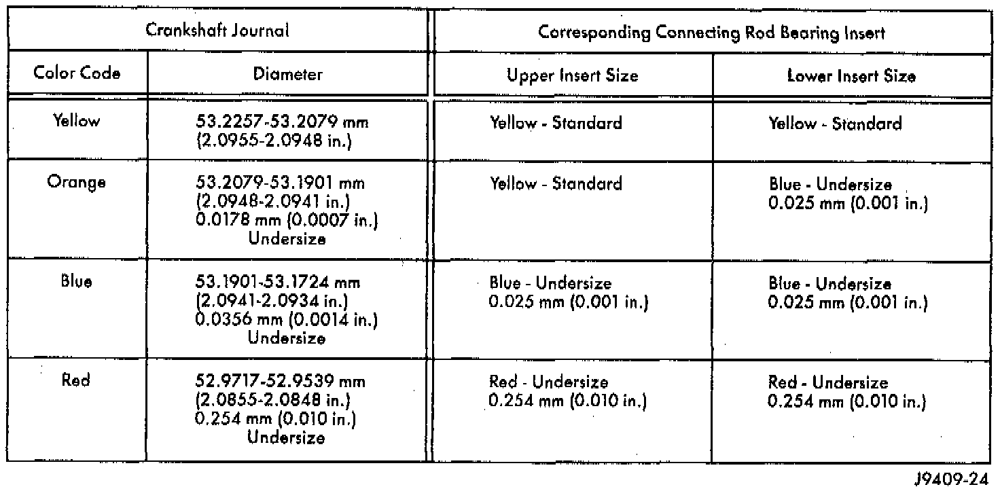
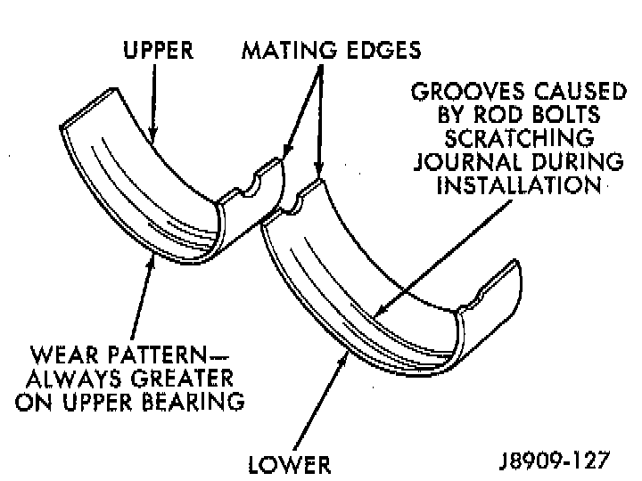
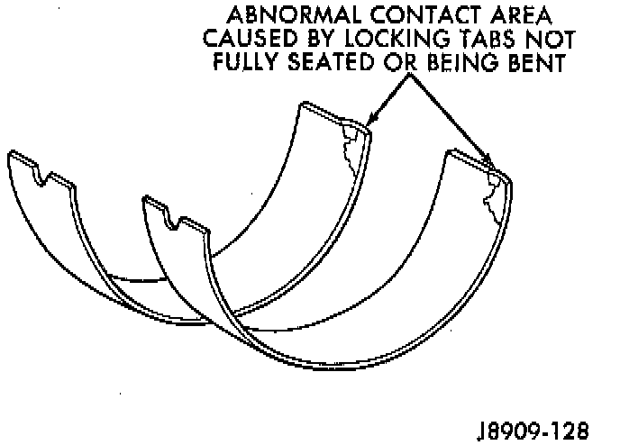
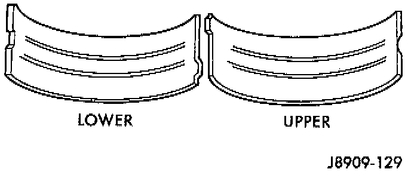
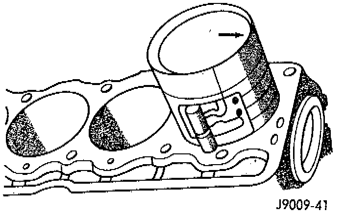
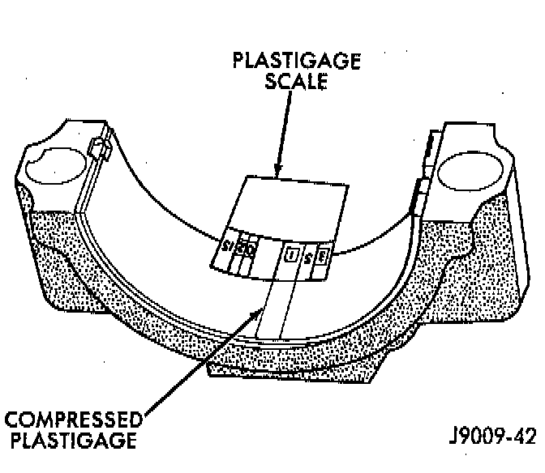

Fitting Connecting Rod Bearings

INSPECTION



Bearings
Inspect the connecting rod bearings for scoring and bent alignment tabs. Check the bearings for normal wear patterns, scoring, grooving, fatigue and pitting. Replace any bearing that shows abnormal wear. Inspect the connecting rod journals for signs of scoring, nicks and burrs.
Connecting Rods
Misaligned or bent connecting rods can cause abnormal wear on pistons, piston rings, cylinder walls, connecting rod bee-rings and crankshaft connecting rod journals. If wear patterns or damage to any of these components indicate the probability of a misaligned connecting rod, inspect it for correct rod alignment. Replace misaligned, bent or twisted connecting rods.
BEARING-TO-JOURNAL CLEARANCE
1. Wipe the oil from the connecting rod journal.
2. Use short rubber hose sections over rod bolts during installation.
3. Lubricate the upper bearing insert and install in connecting rod.

4. Use piston ring compressor to install the rod and piston assemblies. The oil squirt holes in the rods must face the camshaft. The arrow on the piston crown should point to the front of the engine. Verify that the oil squirt holes in the rods face the camshaft and that the arrows on the pistons face the front of the engine.
5. Install the lower bearing insert in the bearing cap. The lower insert must be dry. Place strip of Plastigage across full width of the lower insert at the center of bearing cap. Plastigage must not crumble in use. If brittle, obtain fresh stock.
6. Install bearing cap and connecting rod on the journal and tighten nuts to 45 Nm (33 ft. lbs.) torque. DO NOT rotate crankshaft. Plastigage will smear, resulting in inaccurate indication.

7. Remove the bearing cap and determine amount of bearing-to-journal clearance by measuring the width of compressed Plastigage. Refer to Specifications for the proper clearance. Plastigage should indicate the same clearance across the entire width of the insert. If the clearance varies, it may be caused by either a tapered journal, bent connecting rod or foreign material trapped between the insert and cap or rod.
8. If the correct clearance is indicated, replacement of the bearing inserts is not necessary. Remove the Plastigage from crankshaft journal and bearing insert. Proceed with installation.
9. If bearing-to-journal clearance exceeds the specification, install a pair of 0.0254 mm (0.001 inch) undersize bearing inserts. All the odd size inserts must be on the bottom. The sizes of the service replacement bearing inserts are stamped on the backs of the inserts. Measure the clearance as described in the previous steps.
10. The clearance is measured with a pair of 0.0254 mm (0.001 inch) undersize bearing inserts installed. This will determine if two 0.0254 mm (0.001 inch) undersize inserts or another combination is needed to provide the correct clearance.
11. FOR EXAMPLE: If the initial clearance was 0.0762 mm (0.003 inch), 0.025 mm (0.001 inch) undersize inserts would reduce the clearance by 0.025 mm (0.001 inch). The clearance would be 0.002 inch and within specification. A 0.051 mm (0.002 inch) undersize insert would reduce the initial clearance an additional 0.013 mm (0.0005 inch). The clearance would then be 0.038 mm (0.0015 inch).
12. Repeat the Plastigage measurement to verify your bearing selection prior to final assembly.
13. Once you have selected the proper insert, install the insert and cap. Tighten the connecting rod bolts to 45 Nm (33 ft. lbs.) torque.
SIDE CLEARANCE MEASUREMENT
Slide snug-fitting feeler gauge between the connecting rod and crankshaft journal flange. Refer to Specifications for the proper clearance. Replace the connecting rod if the side clearance is not within specification.